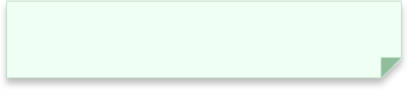

Anis Slimani
Inter-disciplinary Creative
Lascaux SHPELLË is a re-imagined, conceptual digital exhibition built in Unity. It explores the Anthropocene through a single terrain that has carried multiple layers of anthropocenic effect: the Lascaux Caves.
Exploring the caves, the visitor can read the paintings’ meanings, some of which reveal the carbon emissions of the project and of its own digital visitors.

Play a simplified version of the game: HERE!
Lascaux SHPELLË is a re-imagined, conceptual digital exhibition built in Unity. It explores the Anthropocene through a single terrain that has carried multiple layers of anthropocenic effect: the Lascaux Caves.
Exploring the caves, the visitor can read the paintings’ meanings, some of which reveal the carbon emissions of the project and of its own digital visitors.
Play a simplified version of the game: HERE!